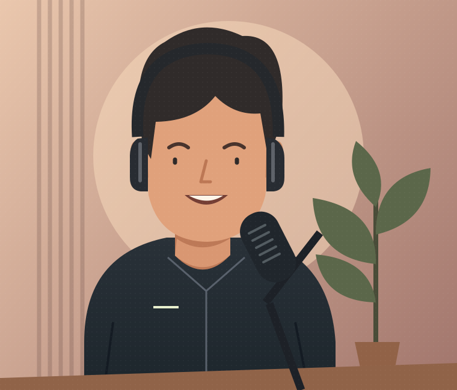

01 / FINDPlanned
Find the story inside.
AI-assisted highlight suggestions could help you discover promising moments in a longer recording. You would choose what makes the cut.
A SMALL START. A BIG VISION.
Your best moments deserve more than one watch. We’re building CvyClip AI to help turn long videos into short clips worth sharing.
In development. A vision you can explore.

LONG-FORM ORIGINALMade with creators in mind.
PodcastsInterviewsLessonsBig conversationsTHE VISION
Long-form content is full of small stories. Our goal is to make finding and shaping those stories feel a little less like work.
AI-assisted highlight suggestions could help you discover promising moments in a longer recording. You would choose what makes the cut.
Editable captions and framing controls are part of the plan, so your clips could look like you and say what you actually mean.
We’re exploring exports for vertical, square, and landscape video. One conversation could have more than one way to show up.
These are product goals, not currently available tools. AI suggestions would still need your review.
A PEEK AT THE POSSIBILITIES
Imagine taking an idea from a long conversation and giving it a format of its own.
Vertical 9:16 with highlighted captions. An illustrative layout for a short-form story.
A design concept, with no upload needed. This preview changes an illustration locally. It doesn’t process or export video.
BUILDING WITH INTENTION
We’re at the beginning. Here’s the direction we’re working toward, with room to learn along the way.
A clear vision, a visual identity, and this website.
Explore video handling, transcripts, and highlight suggestions.
Develop caption editing, reframing, and export options.
Test the experience, gather feedback, and refine the details.
A direction, not a release schedule. Features may change. No launch date or pricing has been announced.
A FEW THINGS TO KNOW
The honest answers, right from the start.
Not yet. This is the project’s landing website. The illustrations and interactive format preview show our design direction; they aren’t a working video editor.
We’re exploring AI-assisted highlight suggestions, draft captions you can edit, and ways to reframe long videos for short-form formats. These features still need to be developed and tested. There are no promises of viral results or perfectly accurate captions.
Creators working with their own podcasts, interviews, lessons, and other long-form recordings. The goal is to help you share smaller stories while keeping your voice and editorial control.
No. This website has no upload function, account system, or video storage. The concept preview uses original artwork already included with the page. See our website privacy note for more.
There’s no confirmed launch date or pricing yet. We’ll update this website when there’s something concrete to share. There’s currently no paid plan, waitlist, or registration.
THERE’S MORE IN YOUR STORY.
Small clips. Your perspective. A new possibility.
See where we’re headed